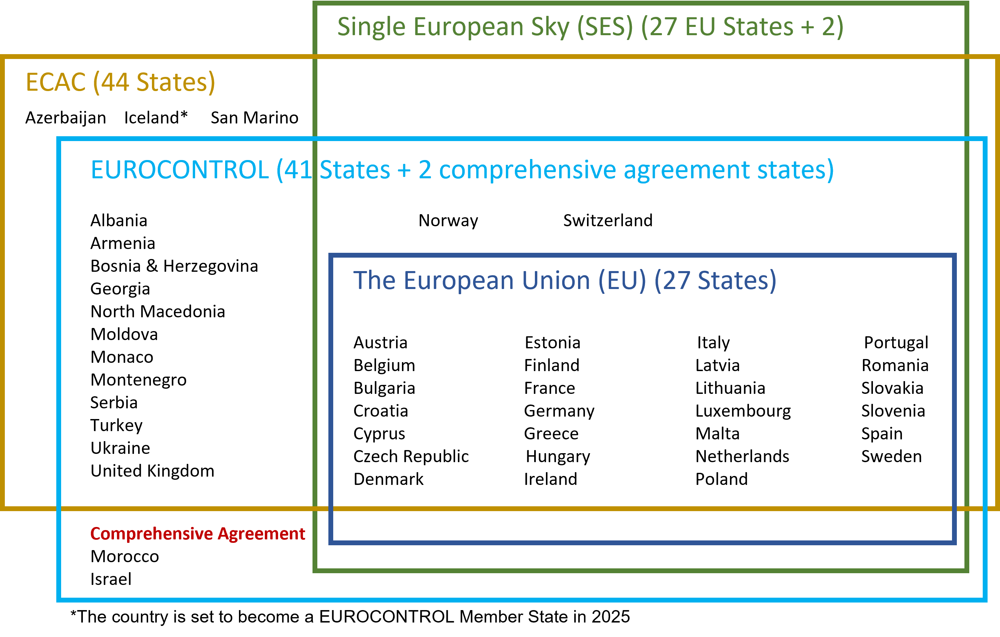
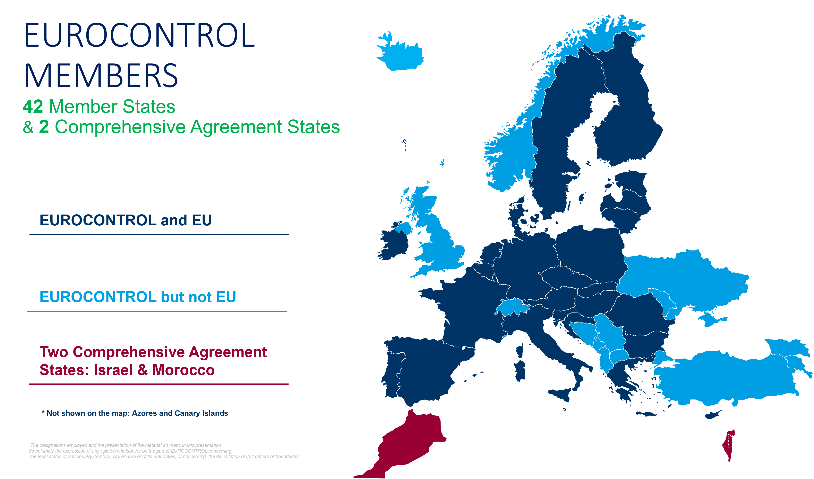
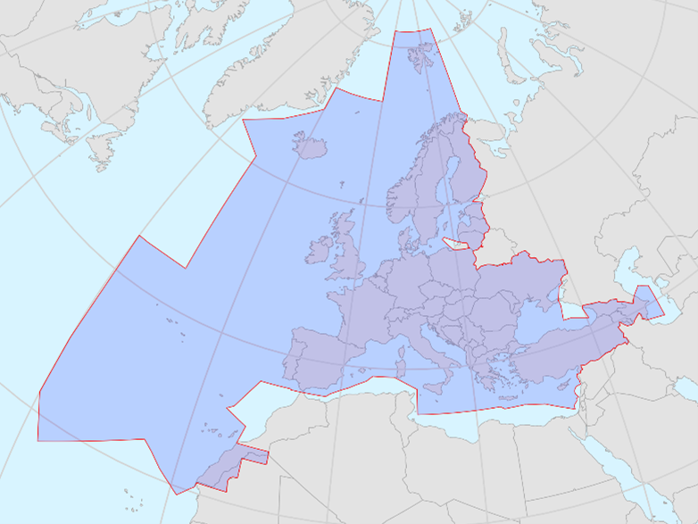

Geographical areas
Member States and geographical areas covered
The Single European Sky initiative, the European Civil Aviation Conference (ECAC) and the European Union (EU) are the different scopes that are covered in this Standard Inputs document.
Figure fig-member-states-set-diagram shows a summary of the States that are included in the different groupings relevant to the aviation domain, while Figure fig-eurocontrol-member-states shows a map of the EUROCONTROL states.

EUROCONTROL Member States

Airspace of the ECAC Member States
ECAC is an intergovernmental organisation that was established by ICAO and the Council of Europe. ECAC now has 44 Member States, including all 27 EU Member States, 31 of the 32 European Union Aviation Safety Agency Member States, and all 41 EUROCONTROL Member States.
Figure fig-ecac-airspace-fir is a graphical representation of the airspace belonging to the ECAC states.
